Amine OUATMANI
I am a Master's student in Computer Science at Université Paris-Saclay. I am passionate about Machine Learning, Deep Learning, Computer Vision, XAI, and Artificial Intelligence, with two research experiences at LISN (CNRS).

Education
I completed a Master's 1 in Computer Science at Université Paris-Saclay, specializing in Artificial Intelligence and IoT. This program covered advanced topics including deep learning, natural language processing, optimisation, IoT and data engineering, with a strong emphasis on research and practical applications. (2025-2026)
I completed my Bachelor's degree in Computer Science at Université Paris-Saclay, where I built a solid foundation in algorithms, data structures, databases, operating systems, and software engineering. I graduated with the highest honors. (2022-2025)
Professional Experience
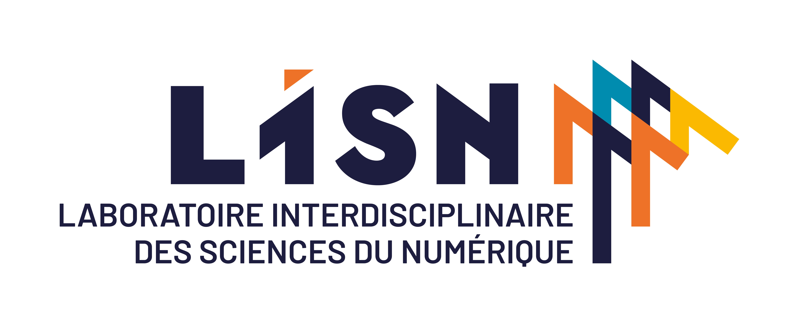
Research Intern, May - August 2026
Under the supervision of Thomas Gerald, I am working on
Explainability (XAI) applied to Large Vision-Language Models (LVLMs):
implementation and evaluation of gradient-based and attention-based attribution methods
to analyze the visual and textual reasoning of multimodal models on complex scientific documents.
This experience allowed me to specialize in depth in Deep Learning,
Computer Vision, NLP and Generative AI,
working with PyTorch, Transformers and Hugging Face libraries.
Research Intern (TER), January - March 2026
Under the supervision of Thomas Gerald, I conducted research on
Vision-Language Models (VLMs) and Explainable AI (XAI).
My work focused on studying Transformer architectures for multimodal
question-answering systems, and analyzing model interpretability on educational documents
and patents. I worked with Transformers and Hugging Face libraries.
Some of my projects
Denoising Diffusion Probabilistic Models (DDPM):
From-scratch implementation in PyTorch of the seminal paper by
Ho et al. (2020).
The model learns to reverse a gradual noising process over T=1000 timesteps,
generating new images from pure Gaussian noise.
The architecture is a U-Net conditioned on the timestep via sinusoidal embeddings,
with ResNet blocks, multi-head self-attention, and skip connections.
Training uses an EMA (Exponential Moving Average) of the model weights
for improved sample quality.
Trained and evaluated on MNIST and CIFAR-10.
Realized in collaboration with CHABANE Oualid.
The complete source code is available on my
GitHub.
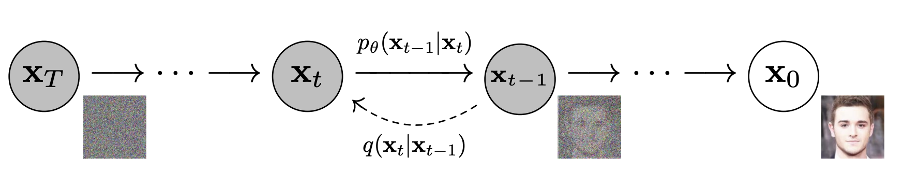
English-to-French Machine Translation (Europarl):
Comparative study of three translation approaches of increasing complexity,
trained and evaluated on the Europarl v8 parallel corpus (OPUS).
The three systems are: a word-for-word baseline using a bilingual positional dictionary,
a cross-lingual embedding retrieval system using multilingual sentence embeddings,
and a fine-tuned Seq2Seq Transformer (MarianMT / Helsinki-NLP opus-mt-en-fr)
with hyperparameters selected via grid search.
The fine-tuned transformer significantly outperformed both baselines (BLEU 0.32 vs. 0.05 and 0.04).
Analysis includes attention map visualization, n-gram BLEU breakdown, and sentence-length impact.
Realized in collaboration with Maxime Hayakawa and Juan Kenichi Sutan.
The complete source code is available on my
GitHub.
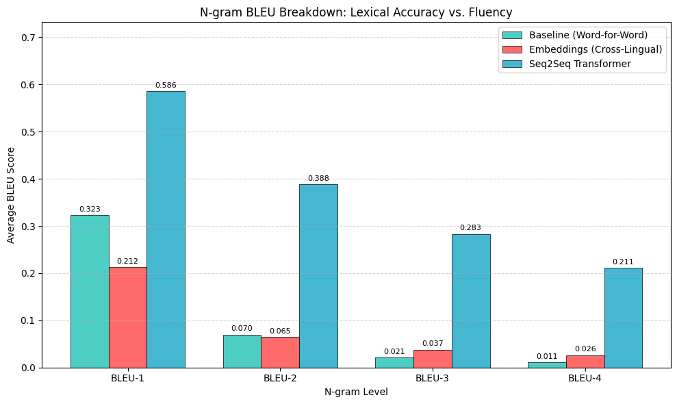
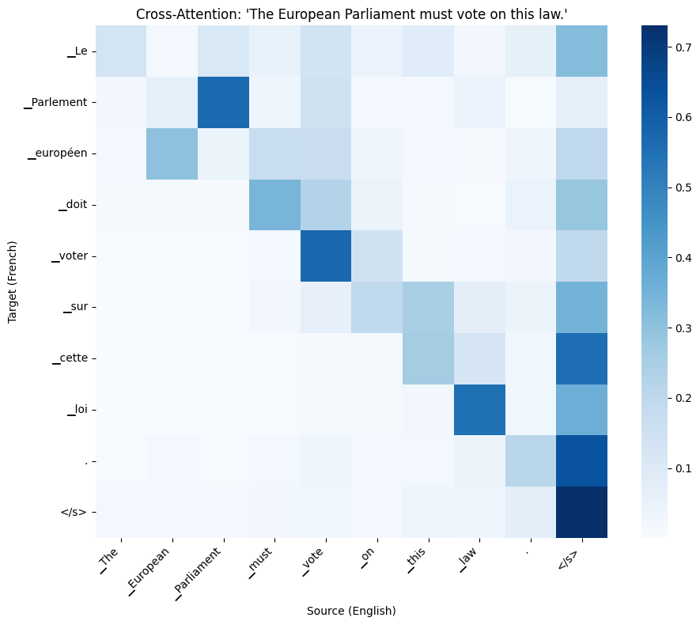
Scientific Article Information Retrieval:
Built a full information retrieval pipeline for a scientific citation prediction challenge
on a corpus of 20,000 research papers.
Starting from sparse baselines (TF-IDF, BM25), we progressively moved to dense retrieval
using large pre-trained encoders (BGE-large, GTE-large, Granite R2),
combining them through Reciprocal Rank Fusion (RRF) with grid-searched weights.
A key contribution of our approach is a hand-crafted ontological domain bonus
that boosts candidate papers sharing the same scientific domain as the query,
which proved to be the single most impactful component of the pipeline.
We also explored body-level chunk embeddings with MaxSim scoring,
citation context embeddings, sparse signal fusion, and a
Matryoshka + LLM re-ranking pipeline using Llama 3.2 via Ollama.
Realized in collaboration with
Lubin LONGUEPEE,
Oualid CHABANE and
Lounes KEBDI.
The complete source code is available on my
GitHub.
IoT Edge: Sensor Monitoring with MQTT, Prometheus & Grafana:
Full IoT edge computing project built on a Raspberry Pi, combining hardware sensing,
real-time messaging, and containerized observability.
An HC-SR04 ultrasonic sensor publishes distance measurements every 0.5s via
MQTT (Mosquitto), which are then bridged to Prometheus
through a custom mqtt-exporter and visualized in Grafana dashboards:
a proximity indicator (color gauge) and a derived speed metric.
The entire stack runs as 5 Docker containers orchestrated with docker-compose,
deployable identically on any machine.
The project also includes email alerting, a QoS analysis across all three MQTT levels,
a sound feedback system that maps distance to musical notes in real time,
and a basketball detector designed to run across multiple Raspberry Pis simultaneously
with a central score-counting referee script.
Realized in collaboration with
Isabel FABREGA,
Johan MARTIN-BORRET and
Zineddine KERMADJ.
The complete source code is available on my
GitHub.
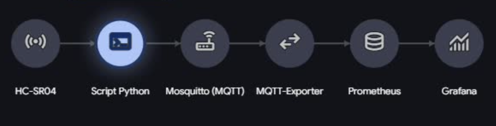
Ant Colony Rush:
A strategic simulation game built in Java Swing where the player manages an ant colony
threatened by a hungry frog.
The objective is to collect resources, expand the nest by recruiting new ants, manage their energy
and health, and accumulate enough supplies to migrate the colony to a safe territory before the frog
devours them all.
The frog has a dynamic field of vision and hunger level, forcing the player to plan efficient
collection routes while avoiding the predator.
The game features multiple difficulty levels, animated menus with background music,
a day/night cycle, weather effects, and a scoring system.
Realized in collaboration with
Johan MARTIN-BORRET,
Ania GAROUI,
Esther DEBA.
The complete source code is available on
GitHub.
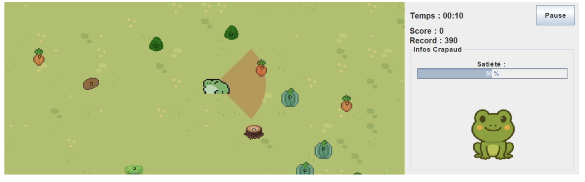
You can find more examples of my work on my GitHub.
Skills
Programming Languages
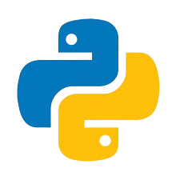
Python Bash
Bash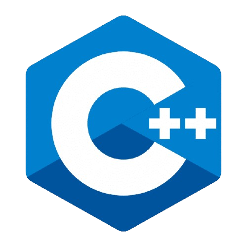
C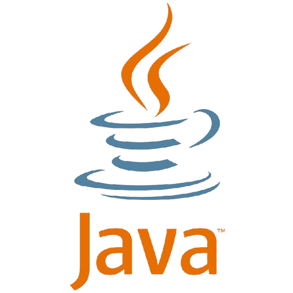
Java- OCaml
Machine Learning & AI
 PyTorch
PyTorch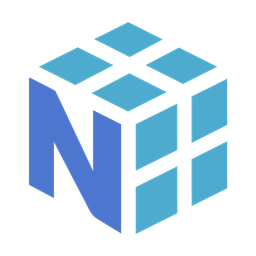
NumPy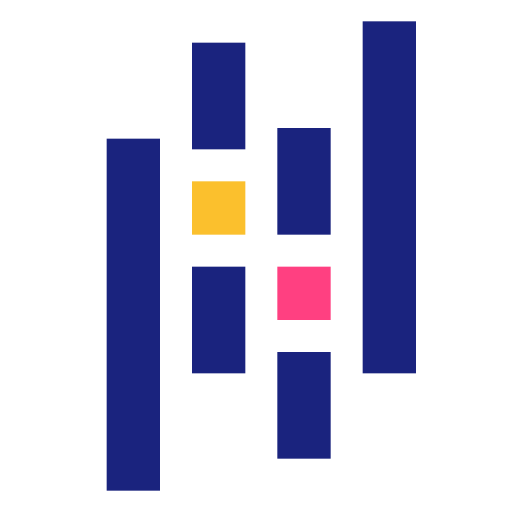
Pandas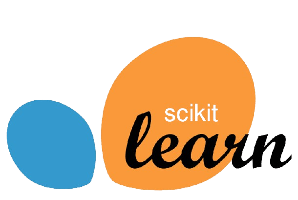
Scikit-Learn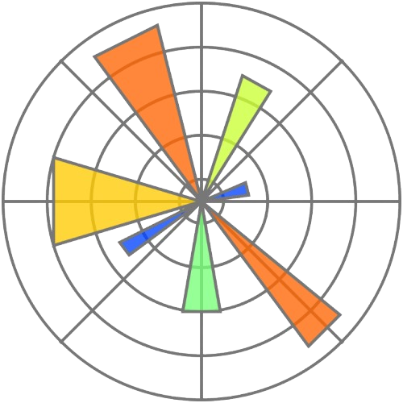
Matplotlib- Hugging Face
Data Engineering & Cloud
- AWS
- Apache Spark
- Docker
- Data Warehouse / Data Lake
- ETL Pipelines
Databases
- SQL
- MySQL
- Oracle
Tools
 Git
Git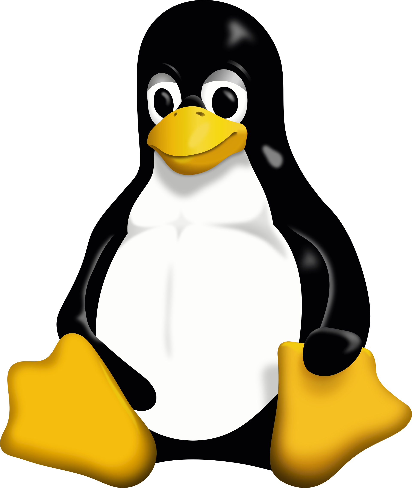
Linux- LaTeX
Languages
- French, Native (C2)
- English, B2 (TOEIC)